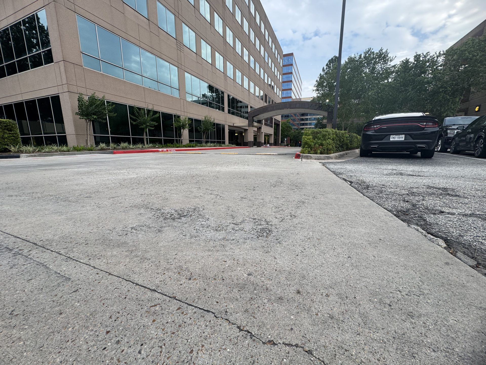

About the Photographer

Capturing urban beauty through my lens
[Your Name]
A passionate urban photographer with an eye for the stories hidden in city streets, architecture, and the interplay of light and shadow that defines metropolitan life.
Every frame is an opportunity to reveal the vibrant essence of cities — from the golden-hour glow reflecting off glass towers to the quiet details most people walk past without a second glance.
Based in the city, shooting everywhere.